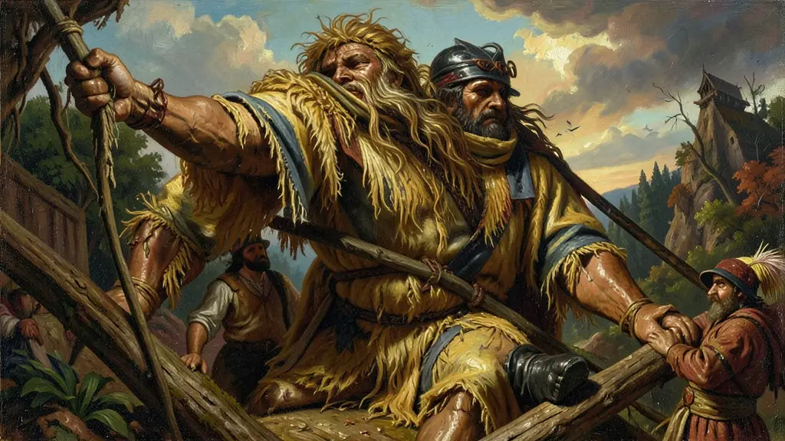
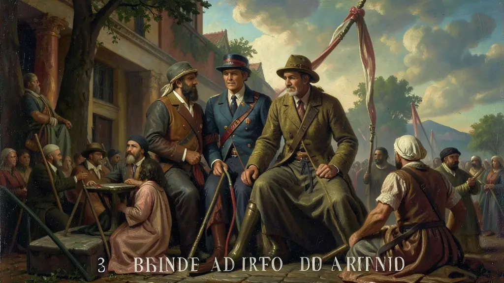
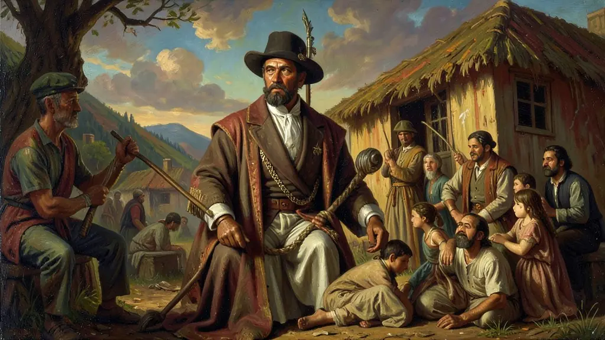

Capítulo 01
1. O Bota-Abaixo: A Expulsão dos Pobres
O prefeito Pereira Passos queria 'limpar' o Rio. Para isso, ele derrubou mais de 600 prédios de cortiços no centro da cidade, forçando as populações negras e operárias a subirem os morros ou se mudarem para as periferias distantes. Essa modernização exclusiva para os turistas e para a elite criou a ferida da desigualdade geográfica que o Rio de Janeiro não fechou até hoje. Os pobres, sem teto e sem voz, acumulavam um ódio que explodiria na primeira oportunidade.

Capítulo 02
2. Revolta da Vacina (1904): O Brinde da Desconfiança
Oswaldo Cruz era um cientista brilhante, mas autoritário. Quando a vacina foi imposta por força de lei, o povo reagiu. Casas eram invadidas por brigadas sanitárias e mulheres eram vacinadas à força, o que era visto como uma ofensa à honra da época. Por quatro dias, o Rio virou um campo de batalha: bondes virados, lojas saqueadas e tiroteios. O povo não era 'contra a ciência', mas contra o Estado que só aparecia para demolir casas ou espetar agulhas.

Capítulo 03
3. Revolta da Chibata (1910): O Almirante Negro
A Marinha era a arma mais aristocrática do Brasil, mas sua tripulação de base era composta quase totalmente por negros e mulatos. O marinheiro Marcelino Rodrigues foi punido com 250 chibatadas diante de todos os colegas por ter levado cachaça para o navio. Foi o basta. João Cândido assumiu o comando dos navios e deu um ultimato ao governo: 'O fim da chibata ou o bombardeio do Rio'. O governo cedeu no papel, mas agiu como traidor na prática.

Capítulo 04
4. A Traição e a Ilha das Cobras
Após a rendição dos marinheiros, o governo de Hermes da Fonseca desrespeitou a anistia prometida. João Cândido e seus companheiros foram jogados na masmorra da Ilha das Cobras, onde foram asfixiados com cal. Dos 18 presos na cal, apenas dois sobreviveram (um deles foi João Cândido). O Almirante Negro passou o resto da vida esquecido e na miséria, sendo reconhecido como herói nacional apenas décadas depois de sua morte.
Capítulo 05
5. Consequências: Higienismo e Controle Social
Essas revoltas mostram que a República Velha era um regime de 'fachada moderna' com raízes coloniais profundas. A elite brasileira acreditava que podia civilizar o país ignorando o povo. A Vacina ensinou que a saúde pública precisa de diálogo; a Chibata ensinou que a humanidade do soldado não se apaga com farda. Ambos os movimentos são marcos da luta pela cidadania num país que insistia em tratar o seu povo como objeto de laboratório ou peça de carga.
O violento choque entre o higienismo europeizado das elites e o abandono absoluto do povo manifestou-se flagrantemente nas revoltas urbanas da Primeira República, em particular a Revolta da Vacina (1904) e a Revolta da Chibata (1910). Ambas revelavam a total falta de mediação política para as populações miseráveis recém egresso-escravizadas no meio citadino carioca.
A indignação contra a obrigatoriedade vacinal (de Oswaldo Cruz) não fora um mero obscuratismo ignorante, mas a fagulha última contra truculentas invasões e a expulsão dos cortiços por Pereira Passos (o 'Bota-Abaixo'). Similarmente, os marinheiros de João Cândido erguiam-se num brado contundente contra um lastro escravocrata nas Forças Armadas: o castigo corporal do chicote.
As provas avaliativas da atualidade exigem focar a Revolta da Vacina e da Chibata como genuínas pautas de dignidade e insurreição corporal contra o biopoder esmagador do Estado. Demonstravam vividamente que cidadania material ainda pertencia fortemente as amarras opressivas do Brasil elitizado.
Fonte: CARVALHO, José Murilo de. Os Bestializados. São Paulo: Cia das Letras, 1987.
Atividades interativas
Questões para fixar
O movimento conhecido como Revolta da Vacina (1904), no Rio de Janeiro, teve como causa principal:
A liderança de João Cândido na Revolta da Chibata (1910) é um marco na história brasileira porque:
Qual foi o principal motivo que levou à Revolta da Vacina no Rio de Janeiro em 1904?
Qual foi a principal reivindicação dos marinheiros durante a Revolta da Chibata em 1910?
O que a 'Revolta da Chibata' e a 'Revolta da Vacina' têm em comum em termos de contexto histórico?